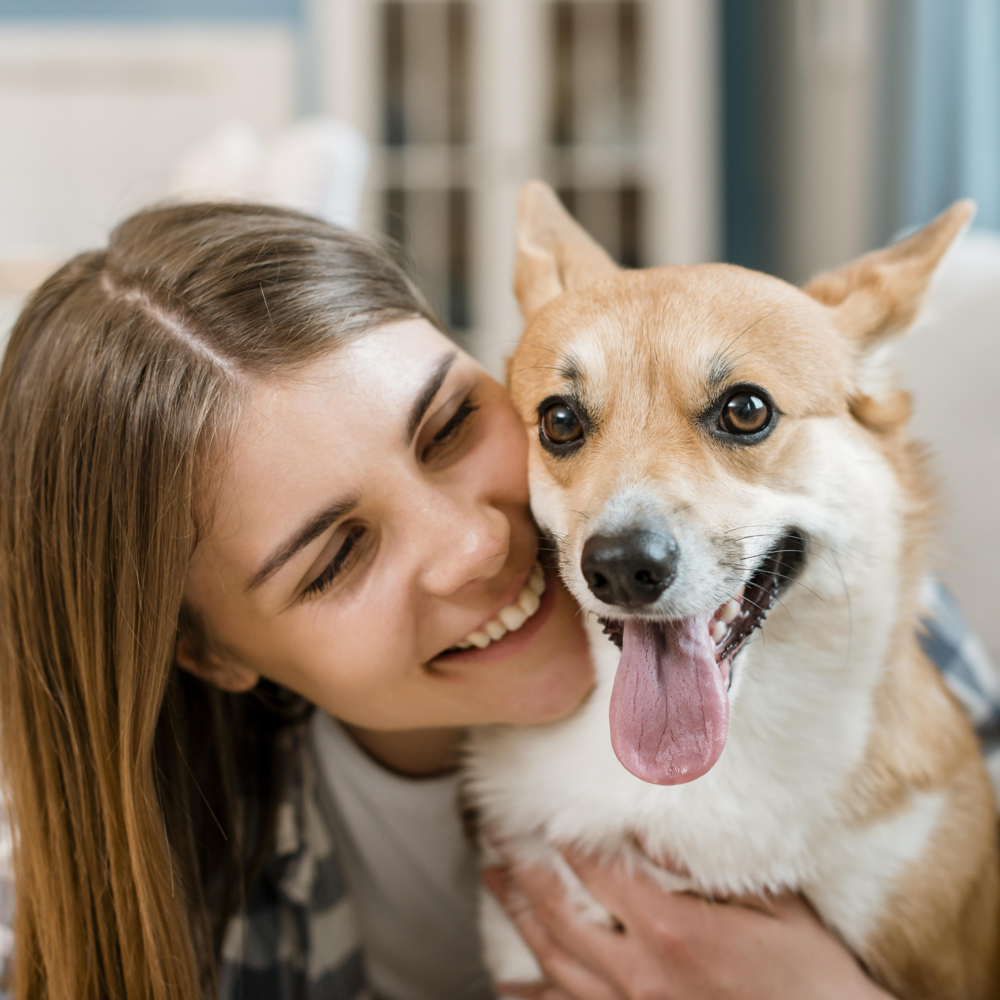
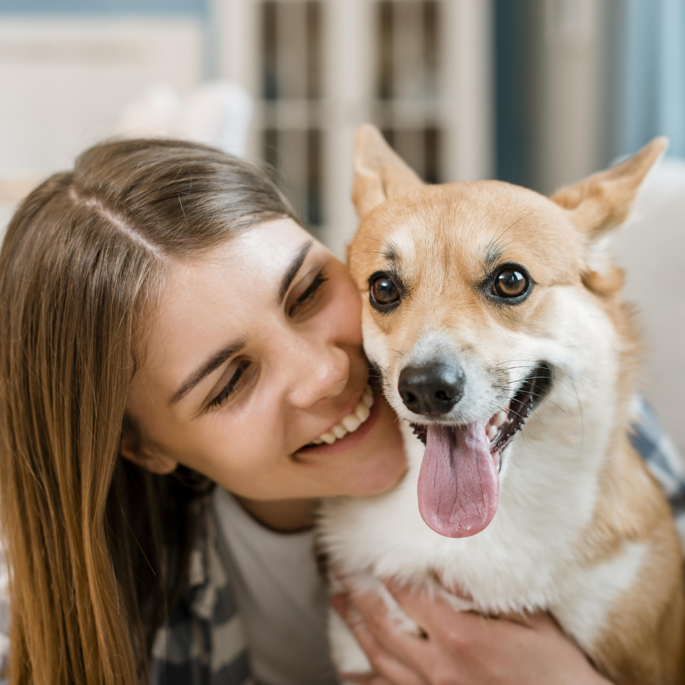

About Us
At Pet Foster, we are passionate about giving every pet a second chance at love and happiness. Our mission is to rescue, rehabilitate, and rehome animals in need while promoting responsible pet ownership. With a compassionate team and a network of dedicated volunteers, we strive to create lasting connections between pets and loving families. Whether you're looking for a furry friend or eager to support our cause, we're here to make a difference—one adoption at a time.

 
